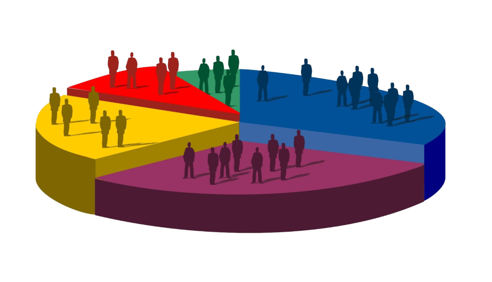

Entendiendo el comportamiento del cliente
Segmentación de usuarios
Entendiendo el comportamiento del cliente
Predicción de la demanda
Entendiendo el comportamiento del cliente
Algoritmos de recomendación
Inversión en contenido original
Patrones de visualización
Inversión en contenido original
Datos demográficos y de género

Inversión en contenido original
Binge-watching